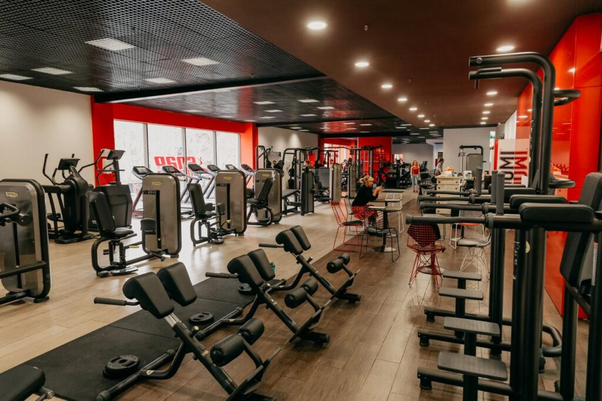

<!-- 1. Create a simple site with a heading and a paragraph. -->

<h1>Gym Ankara</h1>

<p>Welcome To Gym Ankara</p>

<!-- 2. Add a photo using the  tag. -->



<!-- 3. Create navigation links using the <nav> tag. -->

<nav>
    <ul>
        <li><a href="#home">Home</a></li>
        <li><a href="#about">About</a></li>
        <li><a href="#contact">Contact</a></li>
    </ul>
</nav>

<!-- 4. Create a form where name and email can be entered. -->

<label for="2">Enter Your Name:</label>
<input type="name" id="2"><br>
<label for="1">Enter Your Email:</label>
<input type="email" name="email" id="1">
<br>
<input type="submit" value="submit">

<!-- 5. Create a table, 3 columns and 3 lines. -->


<br><br>
<table border="1">
    <tr>
        <th>C1</th>
        <th>C2</th>
        <th>C3</th>
    </tr>
    <tr>
        <td>R1, C1</td>
        <td>R1, C2</td>
        <td>R1, C3</td>
    </tr>
    <tr>
        <td>R2, C1</td>
        <td>R2, C2</td>
        <td>R2, C3</td>
    </tr>
    <tr>
        <td>R3, C1</td>
        <td>R3, C2</td>
        <td>R3, C3</td>
    </tr>
</table>

<!-- 6. Use the style attribute and change the color of the site. -->

<body style="background-color: rgba(46, 177, 31, 0.51);">
</body>

<!-- 7. Add using the <video> tag. -->
<br><br>
<video src="5 SECOND TIMER ⏲️.mp4" controls width="300"></video>

<!-- 8. Add an unnumbered and numbered list of your favorite foods and things you hate. -->

<h2>Favourite Food</h2>
<ul>
    <li>Kubdari</li>
    <li>Khachapuri</li>
    <li>Honey</li>
</ul>
<h2>Food I Hate</h2>
<ol>
    <li>Borshi</li>
    <li>Borshi</li>
    <li>Borshi</li>
</ol>


<!-- 9. Create a link that will take you to YouTube. -->

<a href="https://www.youtube.com/watch?v=igIvWnVG8ew&list=RDigIvWnVG8ew&start_radio=1">Sf-x - ჩემი ქალაქი / Chemi Qalaqi (Prod By Zaza Tevtidze)  (Youtube Video)</a>
